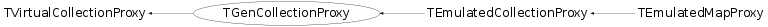

class TGenCollectionProxy: public TVirtualCollectionProxy
TGenCollectionProxy Proxy around an arbitrary container, which implements basic functionality and iteration. In particular this is used to implement splitting and abstract element access of any container. Access to compiled code is necessary to implement the abstract iteration sequence and functionality like size(), clear(), resize(). resize() may be a void operation.
Function Members (Methods)
public:
protected:
| void | CheckFunctions() const |
| virtual void | DeleteItem(Bool_t force, void* ptr) const |
| TGenCollectionProxy* | Initialize(Bool_t silent) const |
| virtual TGenCollectionProxy* | InitializeEx(Bool_t silent) |
private:
| TGenCollectionProxy() |
Data Members
public:
| enum { | kBIT_ISSTRING | |
| kBIT_ISTSTRING | ||
| kBOOL_t | ||
| }; | ||
| enum TVirtualCollectionProxy::EProperty { | kIsInitialized | |
| kIsAssociative | ||
| kIsEmulated | ||
| kNeedDelete | ||
| }; |
public:
| static const Int_t | TVirtualCollectionProxy::fgIteratorArenaSize | greater than sizeof(void*) + sizeof(UInt_t) |
protected:
| TClassRef | TVirtualCollectionProxy::fClass | |
| TGenCollectionProxy::Method | fClear | Method cache for container accessors: clear container |
| TGenCollectionProxy::Method | fCollect | Method to collect objects from container |
| void* | fConstruct | Container accessors: block construct |
| map<std::string,TObjArray*>* | fConversionReadMemberWise | Array of bundle of TStreamerInfoActions to stream out (read) derived from another class. |
| TGenCollectionProxy::Method0 | fCreateEnv | Method to allocate an Environment holder. |
| void* | fDestruct | Container accessors: block destruct |
| ROOT::TCollectionProxyInfo::EnvironBase* | fEnv | Address of the currently proxied object |
| void* | fFeed | Container accessors: block feed |
| TGenCollectionProxy::Method | fFirst | Container accessors: generic iteration: first |
| void* | fFunctionCreateIterators | |
| void* | fFunctionDeleteTwoIterators | |
| TGenCollectionProxy::Value* | fKey | Descriptor of the key_type |
| string | fName | Name of the class being proxied. |
| TGenCollectionProxy::Method | fNext | Container accessors: generic iteration: next |
| TClass* | fOnFileClass | On file class |
| Bool_t | fPointers | Flag to indicate if containee has pointers (key or value) |
| UInt_t | TVirtualCollectionProxy::fProperties | |
| vector<ROOT::TCollectionProxyInfo::EnvironBase*,allocator<ROOT::TCollectionProxyInfo::EnvironBase*> > | fProxyKept | Optimization: Keep proxies once they were created |
| vector<ROOT::TCollectionProxyInfo::EnvironBase*,allocator<ROOT::TCollectionProxyInfo::EnvironBase*> > | fProxyList | Stack of recursive proxies |
| TObjArray* | fReadMemberWise | Array of bundle of TStreamerInfoActions to stream out (read) |
| void* | fResize | Container accessors: resize container |
| int | fSTL_type | STL container type |
| TGenCollectionProxy::Method | fSize | Container accessors: size of container |
| vector<TGenCollectionProxy::TStaging*,allocator<TGenCollectionProxy::TStaging*> > | fStaged | Optimization: Keep staged array once they were created |
| type_info& | fTypeinfo | Type information |
| TGenCollectionProxy::Value* | fVal | Descriptor of the Value_type |
| int | fValDiff | Offset between two consecutive value_types (memory layout). |
| int | fValOffset | Offset from key to value (in maps) |
| TGenCollectionProxy::Value* | fValue | Descriptor of the container value type |
| TStreamerInfoActions::TActionSequence* | fWriteMemberWise |
Class Charts
{kind=link}
{kind=link}
{kind=link}
{kind=link}

Function documentation
else s-> Clear()
TGenCollectionProxy(const ROOT::TCollectionProxyInfo& info, TClass* cl)
void ReadBuffer(TBuffer& b, void* obj, const TClass* onfileClass)
TStreamerInfoActions::TActionSequence * GetConversionReadMemberWiseActions(TClass* oldClass, Int_t version)
MemberWise actions
CreateIterators_t GetFunctionCreateIterators(Bool_t read = kTRUE)
Set of functions to iterate easily throught the collection
CopyIterator_t GetFunctionCopyIterator(Bool_t read = kTRUE)
typedef void (*CreateIterators_t)(void *collection, void **begin_arena, void **end_arena); begin_arena and end_arena should contain the location of a memory arena of size fgIteratorSize. If the collection iterator are of that size or less, the iterators will be constructed in place in those location (new with placement) Otherwise the iterators will be allocated via a regular new and their address returned by modifying the value of begin_arena and end_arena.
Next_t GetFunctionNext(Bool_t read = kTRUE)
typedef void* (*CopyIterator_t)(void *dest, const void *source); Copy the iterator source, into dest. dest should contain the location of a memory arena of size fgIteratorSize. If the collection iterator is of that size or less, the iterator will be constructed in place in this location (new with placement) Otherwise the iterator will be allocated via a regular new and its address returned by modifying the value of dest.
DeleteIterator_t GetFunctionDeleteIterator(Bool_t read = kTRUE)
typedef void* (*Next_t)(void *iter, const void *end); iter and end should be pointers to respectively an iterator to be incremented and the result of collection.end() If the iterator has not reached the end of the collection, 'Next' increment the iterator 'iter' and return 0 if the iterator reached the end. If the end was not reached, 'Next' returns the address of the content pointed to by the iterator before the incrementation ; if the collection contains pointers, 'Next' will return the value of the pointer.
DeleteTwoIterators_t GetFunctionDeleteTwoIterators(Bool_t read = kTRUE)